We bring clinical depth to the companies building digital health products, and provide therapy for the people navigating it all.
Signal Psychology sits at the intersection of clinical science and technology. We consult with health tech companies who want to get the science right, and we offer therapy for individuals navigating high-stakes, high-performance lives.
View servicesClinical strategy, research design, content review, and evidence-based guidance for companies building products that touch people's mental health.
Evidence-based therapy grounded in warmth and real-world complexity. For people in tech, healthcare, and academia who want a clinician who gets it.
April 2026
On the gap between what health tech promises and what the evidence actually supports — and why that gap matters.